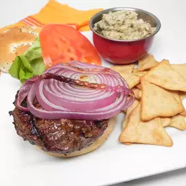

Burger

Description:
There is nothing like a hot burger on a hot day. Simple and spicy, please your heat loving
friends with these thick peppery burgers. Beat the heat by having lots of cold, refreshing drinks on hand.
Ingredients:
- 4 slices red onion
- 1lb ground beef
- 1/2 cup cracked peppercorn A.1. sauce
- 4 split keiser rolls
Steps:
-
Preheat grill to medium-high heat. Spray both sides of onion slices with cooking spray; set aside.
Mix meat and 1/4 cup of the steak sauce; shape into four 1/2-inch-thick patties.
-
Grill patties 5 minutes; turn. Add onions to grill. Cook burgers an additional 5 minutes or until cooked
through (160 degrees F), brushing occasionally with the remaining 1/4 cup steak sauce and turning onions after 3 min.
-
Place burgers on bottom halves of rolls; cover with onions and tops of rolls.
-
Serve with assorted cut-up fresh vegetables and fruit to round out the meal